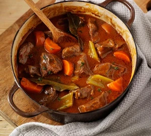

Beef Stew

Description
A traditional braised beef casserole with thick, rich gravy and chunky veg – an ideal recipe for cheap cuts, as
slow-cooking guarantees a tender dish.
Ingredients
- 2 celery sticks, thickly sliced
- 1 onion, chopped
- 2 large carrots, chunkily sliced
- 5 bay leaves
- 2 thyme sprigs
- 1 tbsp vegetable oil
- 1 tbsp butter
- 2 tbsp plain flour
- 2 tbsp tomato puree
- 2 tbsp Worcestershire sauce
- 2 beef stock cubes
- 850g stewing beef, large chunks
Steps
- Heat oven to 140C fan and put the kettle on.
- Put celery, onion, carrots, bay leaves and one whole thyme sprig in a flameproof dish with the oil and
butter.
- Soften for 10 minutes, then stir in flour until it no longer looks dusty. Then add the tomato puree,
Worcestershire sauce and the stock cubes.
- Gradually stir in 600ml of hot water, then tip in the beef and bring to a simmer.
- Cover and put int he oven for 2hrs 30 mins, then uncover and cook for a further 30mins - 1hr until the meat
is tender and the sauce thickened.
- Garnish with the remaining thyme.